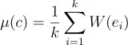

template <typename Graph> double karp_minimum_cycle_mean(Graph g);The karp_minimum_cycle_mean() function calculates minimum cycle mean of a weighted directed graph G=(V,E,W), where V is a vertex set, E is an edge set, W: E -> R is an edge weight function .
We define the mean weight of a cycle C=<e1,e1,e2..,ek> of edges in E to be

The minimum cycle mean is the minimum cycle mean of all cycles of the graph. The karp_minimum_cycle_mean() returns the calculated minimum cycle mean. Returns -1 if the graph has no cycles.This algorithm was described by Richard M. Karp in his paper A characterization of the minimum cycle mean in a digraph
boost/graph/karp_minimum_cycle_mean.hpp
IN: const Graph g
A weighted directed graph.
OUT: double minimum_mean_weight
The implemented algorithm runs in O(|V||E|) time. Where V and E are vertex set and edge set respectively.
The program in libs/graph/example/minimum_cycle_mean_example.cpp finds the minimum cycle mean of the defined graph.